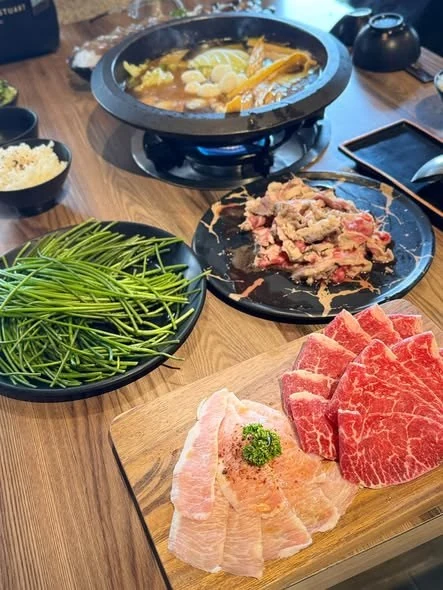
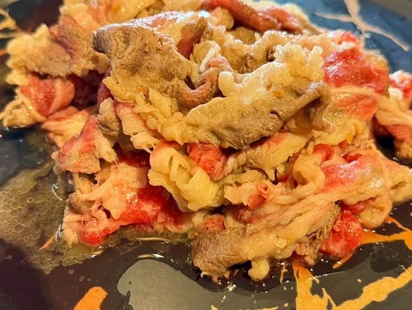
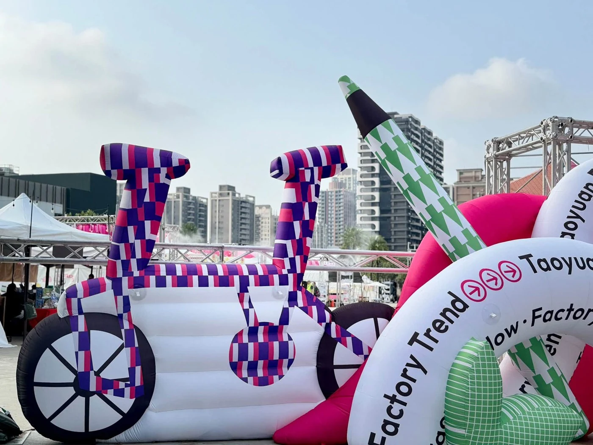
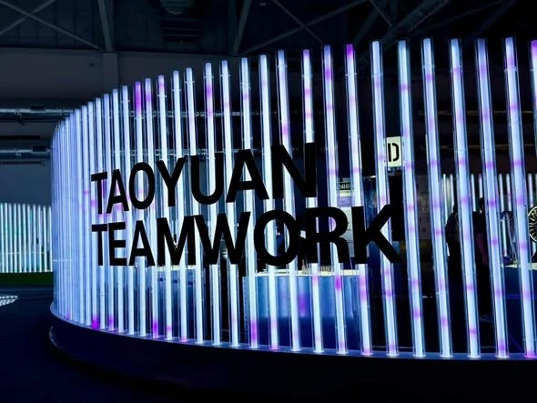
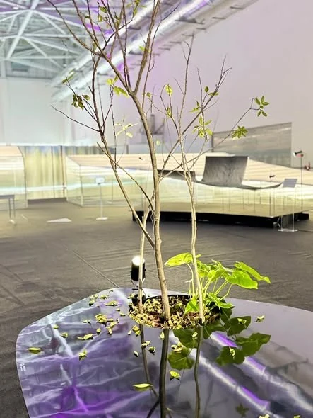
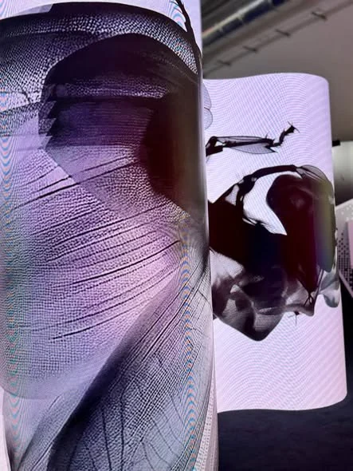
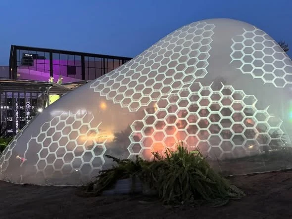
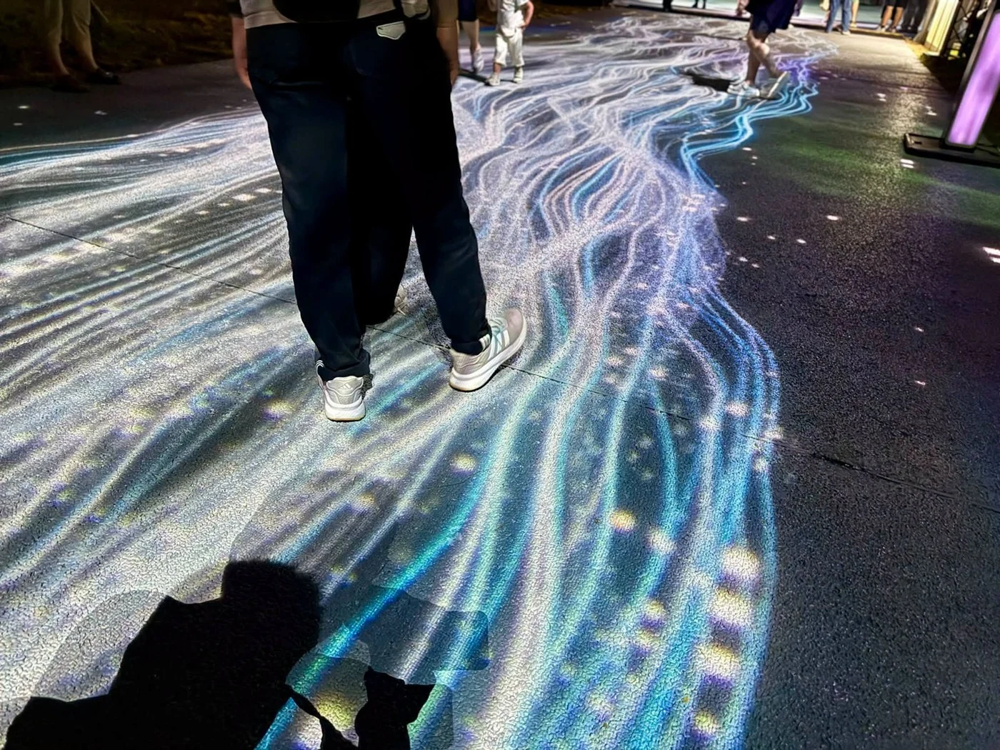

十月一日，我去桃園找靈感。結果，先找到一鍋火鍋。
這個開場似乎不夠藝術，但很符合喵叔的旅行邏輯：要讓腦袋裝進新東西，最好先別讓肚子空著。這一天，我把午餐交給拾伍石頭鍋物，把下午交給2026台灣設計展，再把夜晚交給光。
原本只是想出門看看，替自己的網站找些新點子。最後帶回來的，卻是一個比版面更值得思考的問題：怎樣讓人願意靠近一個故事，而且，在裡面多留一會兒？
一、先讓胃滿意，才有力氣談美學

鍋物上桌，肉盤與青菜各自占好位置，旅行立刻有了很具體的開端。眼前這一桌，可比「今天一定要獲得靈感」可靠得多。靈感什麼時候來不好說，午餐在哪裡，倒是一清二楚。
我向來覺得，旅行若只剩行程表，就太像上班。總得給自己一段不用急著趕路的時間，讓筷子先忙，讓腦袋慢一點。看設計前，先來個吃飽飽餐；至於減肥，留給夜跑的我去煩惱。

當天還抽中一盤標示為伊比利梅花豬的肉品。多了一點運氣，也讓我想起自己的職業習慣：看見產地名稱，總忍不住多想一步，一份食物從哪裡來，又怎樣來到餐桌？
這個念頭沒有搶走午餐的樂趣，卻悄悄替後面的展覽開了題。食物有來處，物件有來處，城市也有來處。好的設計，常常讓這些原本藏在日常背後的關係，變得看得見。
二、設計先讓你笑，再讓你多看一眼

來到桃園會展中心，自行車長大了，筆也長大了。粉紅、紫藍、綠白交錯的圖案，讓熟悉的物件突然帶上玩心；背後的城市仍照常運作，前景卻像有人把想像力的音量調高了一格。
這種邀請很直接。你不必先讀完一段策展論述，才有資格覺得它有趣。認得自行車，認得筆，就能從熟悉的形狀踏出第一步。等你願意停下來，設計才有機會繼續說話。
2026台灣設計展以「桃園流 TAOYUAN in FLOW」為主題。水的流動、人的移動、文化與產業的往來，都可以放進這個字裡。桃園因此不只是一個地名，也是一個不斷發生相遇的地方。

光柱排列成有節奏的曲面，文字站在光的前方。這樣的展場提醒我，吸引目光不全靠堆滿東西：有時是排列，有時是間距，有時只是讓一個字，出現在恰到好處的位置。
三、留白裡有風景，轉彎處有故事

另一種美感，來自安靜。枝葉從器皿裡伸出，展場留出大片空間，視線便有地方歇一歇。看過鮮明的色彩，再看這樣的配置，才發現留白也有力量：它把一棵植物從背景裡請了出來。
這對正在經營「喵叔 Moonlit Stories」的我，是個很實用的提醒。文字需要空間，照片需要空間，讀者的心情也需要空間。每個角落都爭著發亮，反而可能遮住真正想說的話。

而當影像轉上曲面，平面的故事又有了另一種表情。它不再只是一張掛在前方的畫面；角度與距離也參與觀看，觀眾得用自己的位置，決定如何與它相遇。
展場的「FLOW CHECK」提出一個問題：你第一眼想靠近桃園哪一種流？其中一句「人與故事正在匯流」，恰好接住了我的念頭。有人為小說而來，有人喜歡攝影，也有人只是偶然路過，卻在某個段落裡認出了自己。
我想為網站帶回的靈感，也漸漸清楚了：除了把作品排得好看，還要給讀者一個願意往裡走的入口。讓標題帶路，讓照片打開情境，再讓文字接住那一刻的好奇。
四、光流方舟：未來仍然從土地長出來
《光流方舟》把另一種桃園帶到眼前。透明外殼接住色彩與圖形，植物就在它的周圍生長；科技的想像與土地的生命，沒有分坐兩端，而是被放進同一個空間。
這個展覽以桃園農業記憶為起點，沿平原、台地丘陵到高海拔山林，呈現四個農業地景梯度。農特產、生產技術與農民故事，透過植物、影像和光，重新進入城市的視野。

談未來時，我們很容易先想到螢幕、速度與新設備。這艘方舟卻讓人把目光放回土地：吃進嘴裡的作物，承受氣候的農田，以及每天照料它們的人，仍然參與著未來的形狀。
午餐時對食物來處的好奇，在這裡繞了回來。一盤食物後面有產地，一株植物後面有環境。城市的故事若只剩下天際線，就漏掉了許多真正支撐生活的東西。
五、城市之鏡：當腳步走進光裡

到了《城市之鏡》，光落在地面，藍白線條沿著路面延伸，像水紋，也像一段攤開的地形。鞋尖、腳步與人影走進其中，城市的夜晚便多了一種觀看方式。
作品位於桃園市立美術館戶外空間，以「自然、人文、匯流、交匯」四個區域，串起水霧、雷射、投影與手機 AR 互動，再將光流引向建築外牆。原本不容易被看見的城市流動，在這裡獲得了顏色與形狀。
但最動人的，仍然是人。作品有它的節奏，觀眾卻有自己的步調；有人前行，有人停住，同一道光於是與不同的人生短暫交會。這也讓「鏡」有了更親近的意思：觀看城市的同時，我們也看見自己站在哪裡。
攝影讓我保留了其中一刻。地面的紋理、人的影子、穿過光流的腳步，讓宏大的城市命題，回到可以親近的尺度。風景之所以留下來，常常就是因為有人曾在裡面。
六、把一點城市的光，留給下一個讀故事的人
一鍋火鍋，幾個展場，一段走進光裡的路。這天最有意思的地方，是它們原本各有主題，卻在回想時慢慢接了起來：生活讓人安頓，設計讓人好奇，土地讓人追問，光影讓人停留。
我帶著「找點子」的心情出門，回來時，更想好好安排自己的創作空間。讓小說有慢慢展開的餘地，讓攝影保留日常的溫度，也讓一篇旅行札記，成為你不必趕路就能同行的地方。
至於減肥的事，還是交給夜跑。那是另一篇札記的工作。
這一篇，先把一點城市的光，留到你讀它的時候。